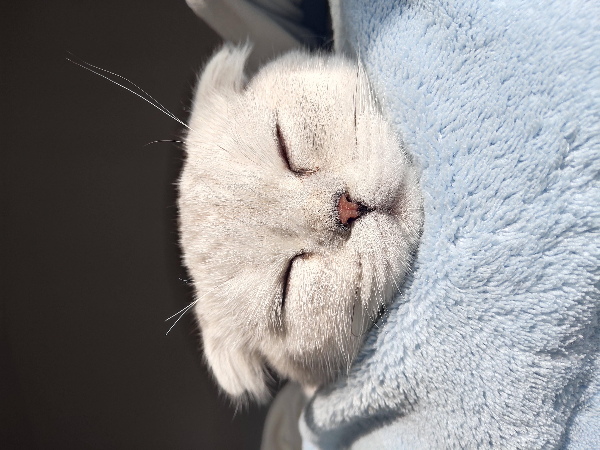

Pets
Brutus
I have 3 dogs. Brutus is one of them. He is a fit and active German Shepard. He loves playing with the ball, not fetch though! If I throw the ball, he will sprint after it but keep it. If I try to run after him to get it back, he will waddle away wagging his tail almost mocking me. Moments like these bring a smile to my face.
Even though he has this playful side, when needed he is the BEST guard dog (apart from the fact that he is terrified of firecrackers). If anyone new comes home, his bark will be heard by all the neighbors. He can sprint like no other animal (even a cheetah). He also makes sure the other 2 dogs behave themselves!
Photo Gallery
Likes:
- playing with the ball
- eating
- belly rubs
Basil

Basil, otherwise known as Slaysil, is a very energetic white, slightly crusty and trusty, dog (bichon) . She gets princess treatment in her household, but also out in public. As a consequence, she is very clingy and loves to lick, especially in the face.
She endeavors in multiple hobbies and activities, which include flying, licking, standing on two legs, ringing bells, and jumping through hula hoops.
Photo Gallery


Likes
- Empty water bottles
- Socks
- Cats
Milktea
Milktea is a Scottish fold with a personality of a princess. She loves her veggies and refuses to eat anything dropped on the ground. She makes it clear when she has a demand of any sort by complaining in a loud, distinguished manner. If what she says could be translated, it probably would be, “This is atrocious, the water container has been empty for the 3rd time this week. I want to see the manager.”.
Despite her cuteness and royalty, she actually suffers from a genetic disorder intentionally brought upon by humans. I highly advise against keeping a Scottish fold because they are in constant pain when they reach around 2 years old. Cartilage accumulates around her paw joints and tail joints and it becomes painful for them to even walk. She is living evidence of human’s cruelty of breeding animals to look pretty while sacrificing the animals’ health.
Photo Gallery


Likes
- She loves individual corn kernels served on human hands
- She enjoys sitting royally on suitcases to claim ownership of her humans
- She prefers to be alone and sit on soft surfaces in her free time
Bo

Bo is a Portuguese Water Dog with black and white fur. His paws are white too, so they always get dirty when outside. He is 12 years old, but he still likes to run around outside a lot.
He has an abundance of toys but only likes to play with a couple. He enjoys going on walks and especially on trails in the woods. He has a few dog friends that he likes to go on playdates with as well.
Photo Gallery


Likes
- Walks
- The Sun
- Treats
Chunky Doll (Chonks)

Chunky Doll or as he prefers to respond to, Chocks, is a 4-year-old ragdoll. His name was inspired by his breed and looks. As a kitten, he was even chunkier and blended right in with a fluffy white rug we had that he loved playing hide and seek in. He’s a very lazy but playful cat, only playful when he feels like it.
He is a pretty but very difficult cat as he is white but hates showers and loves rolling around in the house collecting dust. To get him into a bath we often have to lure him in with fake human treats. And even then he jumps right out of the bath and runs around the whole bathroom making the floors wet. Nevertheless, he’s a very soft, cuddly, and loving cat.
Photo Gallery


Likes
- Human treats
- Naps
- Cuddles